Silicone Slow Feeder Bowl Insert with Petal Dividers
120 × 120 × 45 mm · petal dividers · fits 4 bowl types · 4 colours · SKU DB-03
View Product
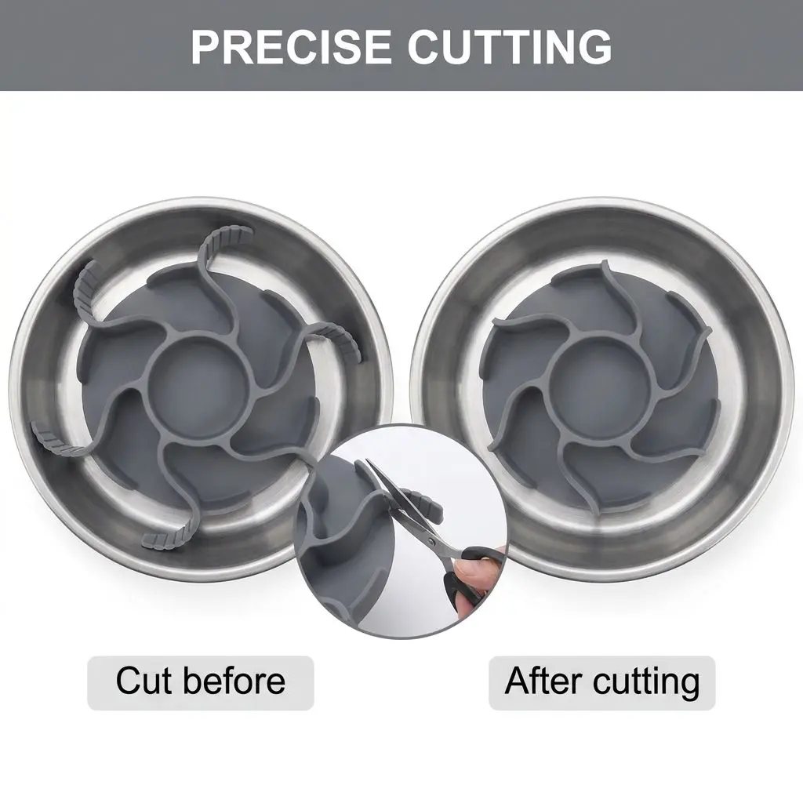
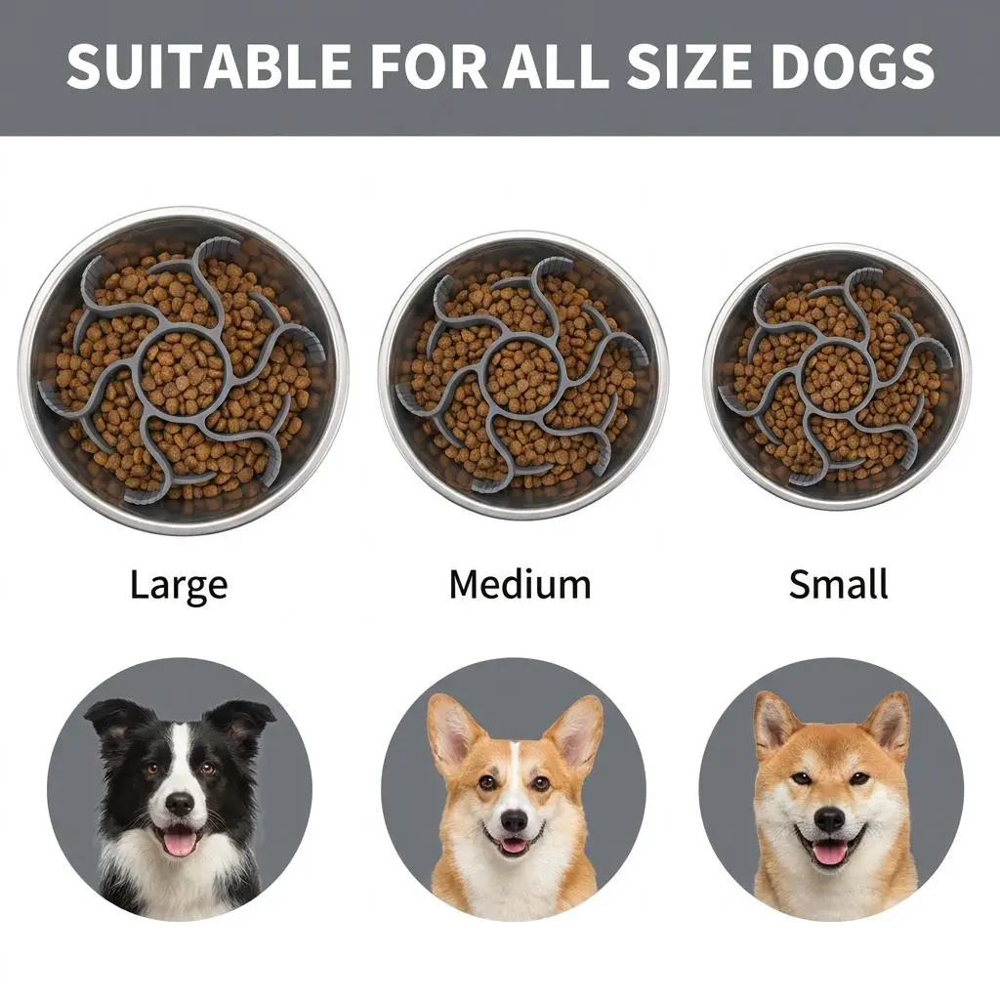
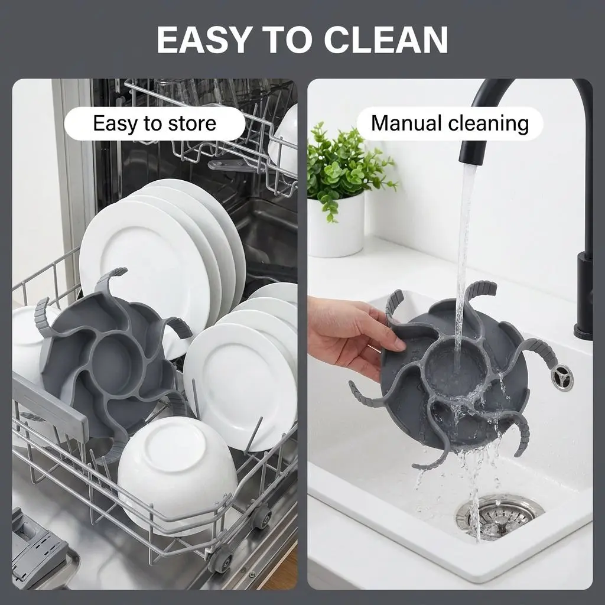
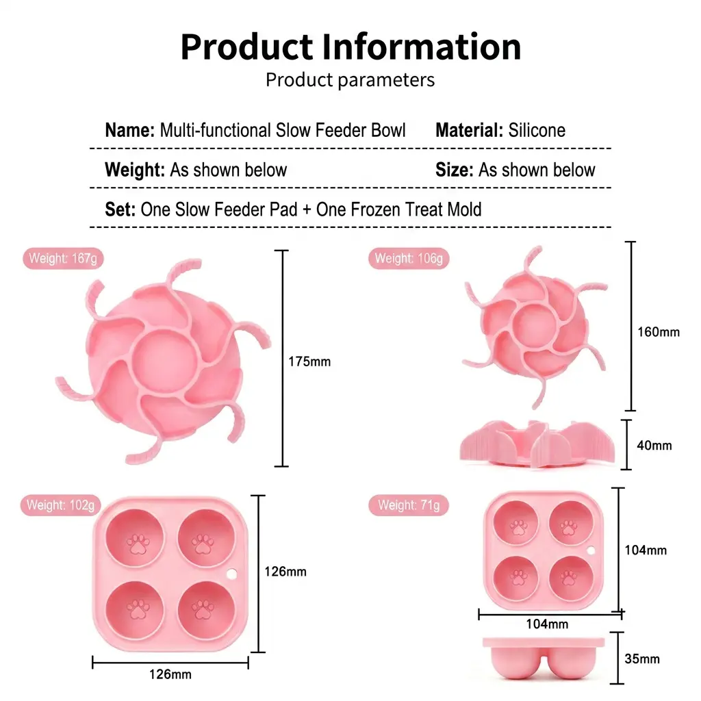
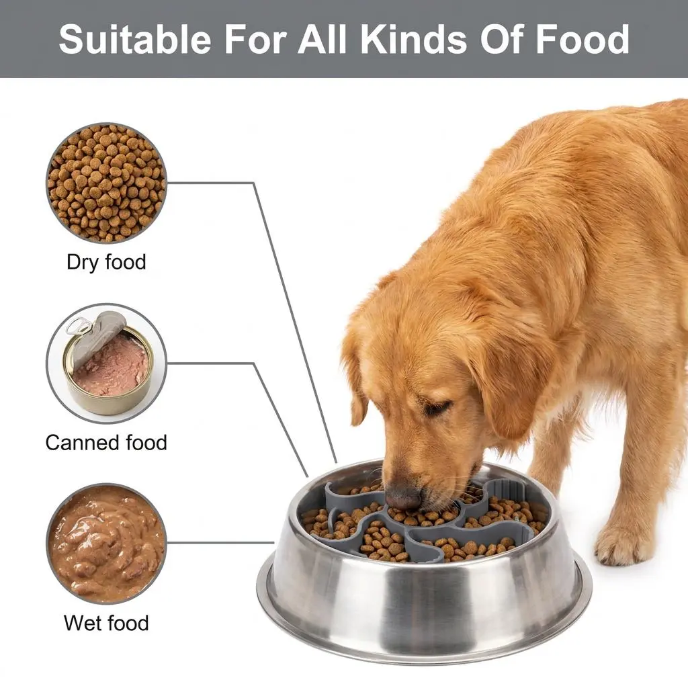
Available in 6 colors: Black, Gray, Green, Pink, Plum, Purple. Custom colors available for OEM orders.
| Material | Food-grade silicone (LFGB / FDA tested) |
|---|---|
| Insert Size L | Ø175 mm, approx. 167 g |
| Insert Size S | Ø160 mm, approx. 106 g |
| Frozen Treat Mold (L) | 126 × 126 mm, approx. 102 g |
| Frozen Treat Mold (S) | 104 × 104 mm, approx. 71 g |
| Colors | Black, Gray, Green, Pink, Plum, Purple |
| MOQ | From 10 pcs (stock colours) · custom colour or logo quoted on request |
| Sample Lead Time | Approx. 7 days |
| Production Lead Time | 15–25 days after sample approval |
| Customization | Logo, color, packaging available |
| Material reports | LFGB / FDA / REACH — silicone parts; reports on request |
| Fit | Cut-to-fit rim — trim with scissors to match your bowl |
| Set Contents | 1 × slow feeder insert + 1 × 4-cavity frozen treat mold |
| Packaging | Individual OPP bag |
| Pet Size | Small / medium / large dogs; also works for cats |
| SKU | LM-021 |
Instead of buying a complete slow feeder bowl, this paw-shaped slow feeder insert drops into the dog bowl the owner already has. That makes it a practical slow feeder insert for dog bowl upgrades: the bowl stays in use and the insert adds the maze surface that slows eating. It suits stainless steel, ceramic and most round bowls with a smooth inner wall.
The outer rim is designed to be trimmed. Using scissors, the owner cuts the rim down until the insert sits flush inside the bowl, which means one slow feeder insert can fit a range of bowl sizes. The cut line is marked on the rim, and the silicone trims cleanly without cracking.
The paw pattern uses raised webs, channels and a central pad to break up the surface of the food. A dog has to work around the ridges to reach each piece of kibble, so a meal that used to take seconds takes minutes. This is the core job of any dog slow feeder insert, and it works with dry kibble, canned food and raw food.
Each set includes a 4-cavity paw-print frozen treat mold. Yogurt, broth, puree or wet food can be frozen into paw shapes that fit the bowl or serve as a separate enrichment treat. Buyers can order the slow feeder insert and the mold together as a set, or as separate SKUs.
The slow feeder insert comes in two sizes: Ø175 mm (approx. 167 g) and Ø160 mm (approx. 106 g). The matching frozen treat molds measure 126 × 126 mm (approx. 102 g) and 104 × 104 mm (approx. 71 g). The flexible silicone can be trimmed to fit between sizes.
Made from food-grade silicone tested to LFGB and FDA standards. The material is BPA-free, PVC-free and odorless, does not chip or crack, and is safe for direct food contact including frozen treats. It is soft enough not to damage the bowl coating and flexible enough to remove for cleaning.
Six stock colors are available: Black, Gray, Green, Pink, Plum and Purple. Custom Pantone colors, embossed or printed logos, OPP bags and printed color boxes are available for OEM orders. Sample lead time is about 7 days; production runs 15–25 days after sample approval.
This slow feeder bowl insert is a low-freight add-on for retailers already selling bowls: it packs flat, stacks in a carton and sells as an accessory or as a set with the frozen treat mold. It suits Amazon FBA sellers, pet brands and wholesale distributors building a slow-feeding range, and it also works as a slow feeder insert for cats when trimmed to a smaller bowl.
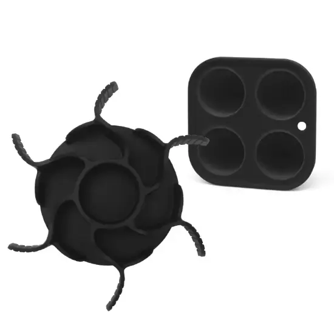
Black
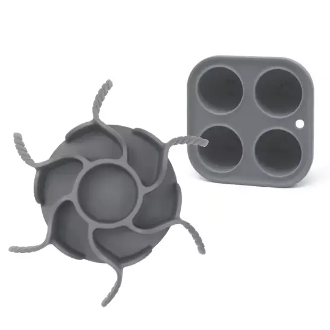
Gray
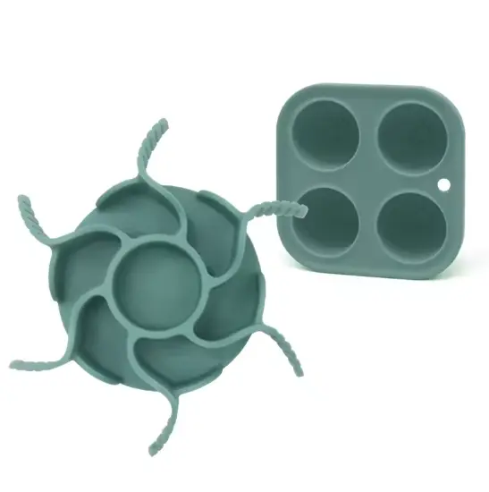
Green
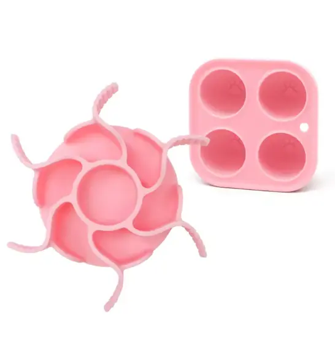
Pink
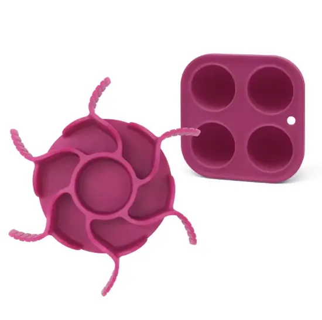
Plum
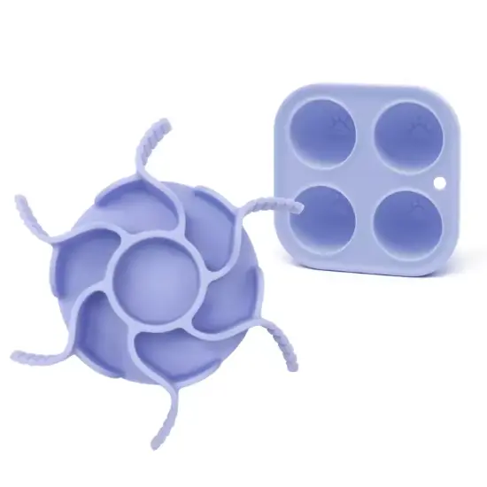
Purple
There are two ways to add a slow feeder insert to a dog bowl. A cut-to-fit insert like this one trims with scissors to match the bowl diameter, so it covers a wide range of bowls and lets the bowl's own rim hold it in place. A drop-in insert works the other way round: it is sized to the bowl's inner diameter and lifts out in one piece.
If you are buying a dog bowl slow feeder insert for bowls you do not control, cut-to-fit is the safer choice. If you are matching an insert to your own bowl line, a drop-in design is quicker for the customer — see our silicone slow feeder bowl insert for that format.
The rim is cut-to-fit: trim it with scissors until the insert sits inside the bowl. It works with most round stainless steel, ceramic and plastic bowls within the size range. If you are unsure, order a sample and test the fit in your bowl.
One slow feeder insert plus one 4-cavity paw-print frozen treat mold. The insert and the mold can also be ordered as separate SKUs — contact us for the component pricing.
Insert: Ø175 mm (approx. 167 g) or Ø160 mm (approx. 106 g). Frozen treat mold: 126 × 126 mm (approx. 102 g) or 104 × 104 mm (approx. 71 g). The silicone can be trimmed between sizes.
Yes. The silicone insert can go on the top rack of a dishwasher, and both the insert and the mold are freezer safe for frozen treats.
From 10 pcs for stock colours. Custom colours, logo and packaging are quoted on request.
120 × 120 × 45 mm · petal dividers · fits 4 bowl types · 4 colours · SKU DB-03
View Product
342×177×68mm · Anti-spill tray · SKU LM-020
View Product
L: Ø120mm, S: Ø80mm · 8 colors · SKU LM-017
View ProductGet wholesale pricing, request a sample, or discuss OEM customization — we reply within 12 hours.
Marvin Bai — Sales Manager
📧 marvin@szqidian.net
📱 +86 159 1412 0274
Shenzhen Qidian Electronic Technology Co., Ltd.